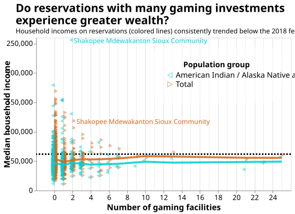
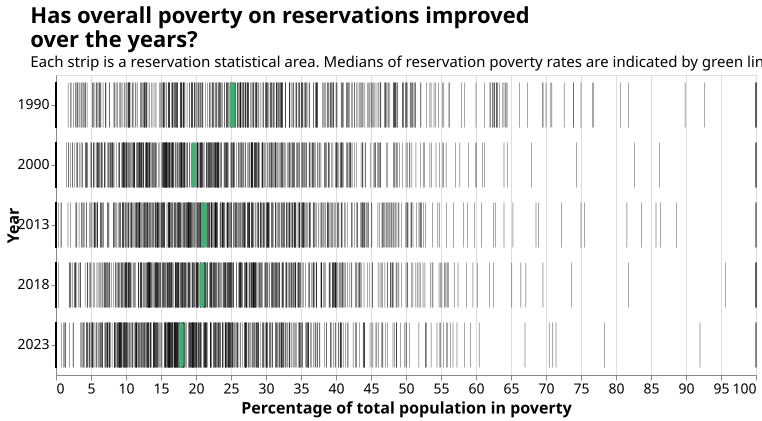
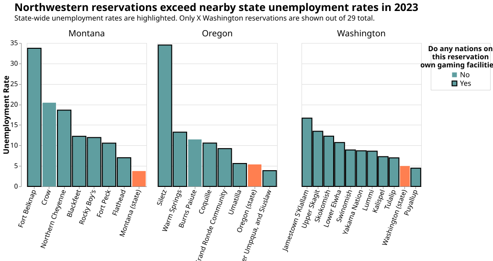
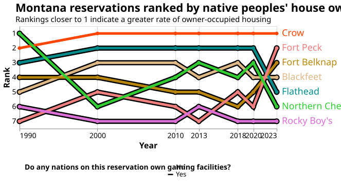
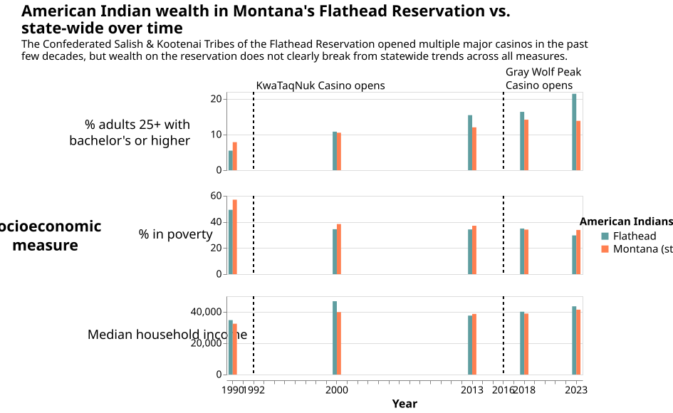
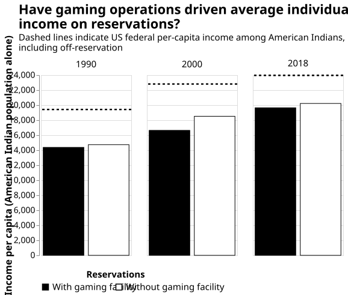

Prepared by Riley Kouns
In 1988, the passage of the Indian Gaming Regulatory Act (IGRA) lifted US federal restrictions on tribal gaming in Indian reservations. With this legislation came the opportunity for native nations to build new revenue streams, aiding in economic development of communities that have long been actively disadvantaged and destroyed by the US government. Alongside this opportunity came stereotype, that permitting Indian gaming is so-called "preferential" treatment for native nations. If anything, there is reason to be skeptical that tribally owned gaming operations alone can lift reservations' socioeconomic status alone. Whether to dispel opinions of gaming as a stereotype or as a panacea, the relationship between tribal gaming ownership and reservation economic development is well worth investigation. Tribal gaming may really give no "edge" at all to the wealth and prosperity of native nations.
Data for this project come from Minnesota Fed's Native Economic Trends (NET) and the National Indian Gaming Commissions' (NIGC) registry of gaming facilities. Tribal gaming operations are recorded by the NIGC, but gaming facility revenues are only available as a national total or more granularly through paywalled estimation services. For this study, we can only determine the number of gaming facilities owned by each tribe or nation. Because the NET data only break down to the reservation level, we count the number of facilities in each reservation owned by nations based in that reservation. Gaming facility counts as of 2025 are at least a crude proxy for the revenue flowing into reservations that may then be used for economic development and tribal revenue sharing.
Many native communities are both small and undersampled, and there are many time gaps in their data. Sparse data, however, is no reason not to try anyway.
To give a fair overview of wealth in reservations across the country, we start with pre-pandemic measures. Many non-native individuals in fact live on Native American reservations, making it critical important to distinguish between population subgroups.

The first reservation that might have caught your eye: The Shakopee Mdewakanton Sioux.
A notable success story in tribal gaming, the Shakopee Mdewakanton has fewer than about 500 individuals identifying as American Indian only, but a large revenue sharing agreement with enrolled members.
This is by no means representative of reservations. Note the overall trend of household incomes on reservations below the US federal average.
Even irrespective of casino ownership, reservations as a whole have vaguely trended away from poverty since the IGRA.


Reservation lands tend toward the west half of the US, in no small part a consequence of the US' Indian Removal policy in the 19th century.
In addition to displacement overland, the US routinely stripped native nations of land previously "reserved" by treaty.
Loss of land quickly translates to loss of opportunity, but the prospect of tribally owned gaming facilities offers to help mend that in the modern day.
A tribally owned casino may boost, for example, employment both directly by hiring members and indirectly raising revenues to reinvest in the reservation.
However, the reservations facing the highest unemployment rates in these three states also have tribally owned casinos. In fact, Washington reservations
without casinos see unemployment rates at nearly every part of the spectrum.
Not only this, but reservation labor forces overall tend to struggle finding work more than the states they are adjacent to do.
Remarkably, maybe even counterintuitively, the Crow Reservation is the only Montana reservation with no casinos on NIGC's registry, yet has led Montana reservations in the share of housing units occupied by owners for years.
While this is a positive figure for the Crow Reservation, we also saw previously that the Crow Reservation has some of the highest unemployment in the state.
The presence or absence of gaming facilities has not painted a clear picture for economic development thus far.

Every reservation is home to its own nations, which we have grouped out of necessity due to the way public data are collected. However, aggregating distinct communities inevitably obscures their individual experiences. To the best of our ability given these constraints, we can zoom in further on one reservation. The Flathead Reservation stood out as having the lowest reservation unemployment rate in Montana and for many years had a relatively high rate of owner-occupied housing.

The Flathead Reservation has occasionally broken from state-wide socioeconomic trends throughout Census and American Community Survey years. Most notably, the Flathead Reservation jumped in bachelor's degree attainment since 1990, perhaps attributable to the tribally operated Salish Kootenai College, but the Flathead is not the only reservation to have an institution of higher education.
The sparse availability of data over time makes it difficult to see how the two major casino openings (KwaTaqNuk and Gray Wolf Peak) impacted the reservation. There is no doubt that gaming revenues contribute heavily to the Confederated Salish and Kootenai Tribes (CSKT), but the extent to which those revenues offset historical and contemporary challenges is less certain.

Even after adjusting for inflation, per-capita income on reservations has trended upward
roughly each decade since 1990.
Although per-capita income is an easily skewed measure, it appears that casino-less reservations
fare better in this respect.
Do nations that open casinos get rich? Or is it just that nations with greater
econonomic means are able to open casinos?
What matters most of all in this figure is that fact that the
American Indian population has consistently experienced higher per-capita income
outside of reservations.
American Indian and Alaska Native (AIAN) identification. It was not until 2000 that the
Census allowed self-identification with more than one race, so to make any attempt at a comparison
with pre-IGCA data from 1990 requires that we focus on populations who identify as AIAN alone.
Additionally, facility-level revenue data belongs to casino owners themselves, so without
industry knowledge, the exact effect of revenue distribution is tough to discern.
We could ask "Do reservations with casinos really do better than those without?", but
given the data limitations, this burning question is perhaps not a totally helpful one.
The fact of the matter is that many Native American reservations in the US face greater economic
adversity than off-reservation counterparts. Casinos may be a tool for economic development, but
they don't look like a silver bullet.
“Native Economic Trends: Federal Reserve Bank of Minneapolis.” Federal Reserve Bank of Minneapolis: Pursuing an Economy that works for all of us.
“Map of Indian Gaming Locations: Gaming Tribes by State (Pdf).” National Indian Gaming Commission, June 17, 2025. https://www.nigc.gov/map/.